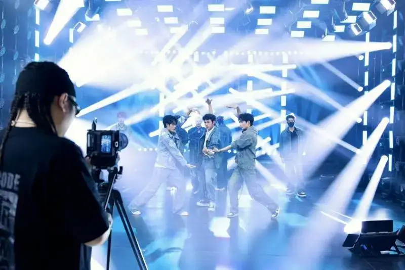
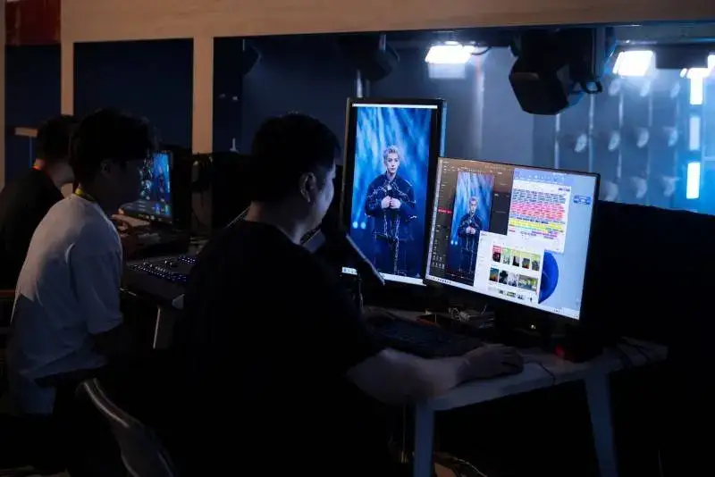
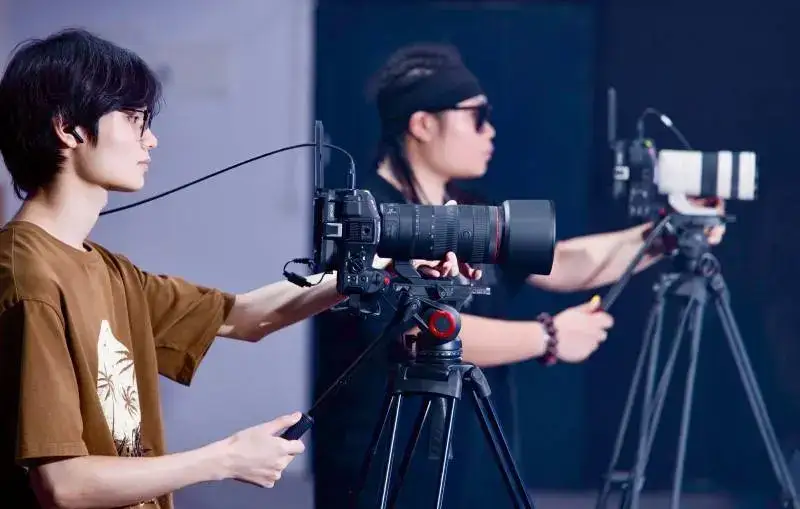
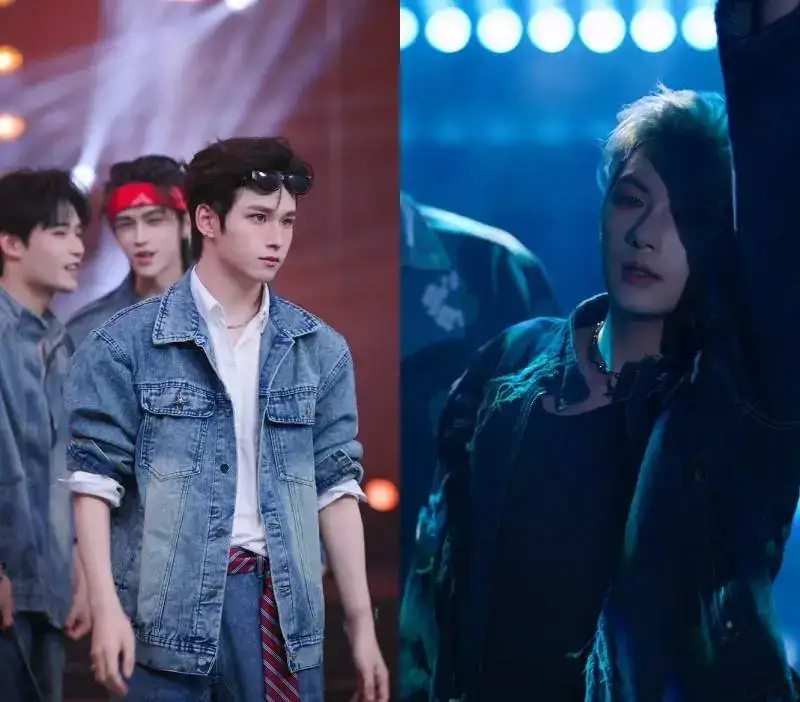
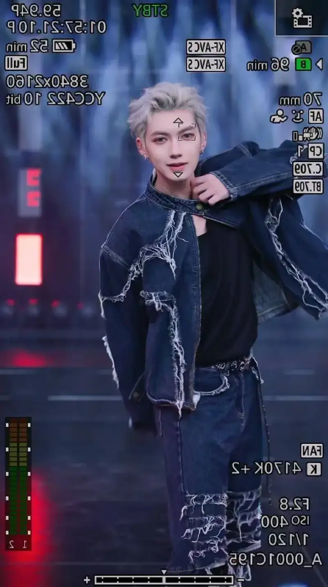

Entertainment group streaming has risen fast, thanks to rich interaction, professional dance, and real-time engagement, and it is a new growth point of the streaming industry. As content develops fast, viewers demand higher stage design and stream quality. To build a high-quality group stream with a star feel, entertainment guilds must raise image texture, equipment stability, and color. Against this backdrop, Canon Jia Zhi Bo teamed up with an entertainment guild to upgrade the image through systematic professional technology, and open a new star-quality streaming experience.
A top guild upgrades its stream room with Jia Zhi Bo for a premium group stream
Haichuan Xingchen is a leading entertainment streaming guild in southwest China. It entered the industry early, in 2012. With sharp market insight and a drive for content quality, it earned Douyin S-level guild certification in 2015, and grew into a benchmark. In 2023, it read the group-stream trend early and made the strategic shift from traditional streaming to premium group streams. Building premium boy and girl groups on a high-end route is what sets Haichuan Xingchen apart from other guilds.

Haichuan Xingchen built a variety-show-grade stream stage of over 100 square meters for premium group streaming
The boy and girl groups under Haichuan Xingchen quickly drew visual attention through looks and varied styles. The boy group stream focuses more on a natural look: through natural skin, dimensional contours, and refined makeup, it builds a real image that still has star quality. To deliver a smooth, surprising, and interactive high-quality stream, Wang Jianguo, head of technology at Haichuan Xingchen, said: we compared many solutions and settings again and again, and finally chose the Jia Zhi Bo two-position stage streaming solution. Whether it is the HD image and skin tone for viewers, or the stability and control for the team, this Jia Zhi Bo solution won over our hosts and technicians.
The Jia Zhi Bo streaming solution builds a star-quality group stream
Canon Jia Zhi Bo became a key help for Haichuan Xingchen to raise group-stream quality. In 2024, for the fast-growing streaming market, Canon, drawing on years of imaging technology, gave professional advice for e-commerce and entertainment streaming, and officially released Jia Zhi Bo solution 2.0. The version designed for entertainment stage rooms fits the needs of Haichuan Xingchen's premium group stream closely, and gives a strategy for upgrading the room.
The Haichuan Xingchen stream room uses the Jia Zhi Bo solution

Directors at the switcher watch the live output at all times
In practice, Haichuan Xingchen used the Canon EOS C80 two-position entertainment group-stream solution. Two EOS C80 digital cinema cameras, each with an RF70-200mm F2.8 L IS USM Z lens, serve as the main position and the close-up position. The main position shows the whole stage and the group's dance, while the close-up position catches facial expressions and small moves during dance and interaction, so viewers get a more immersive, on-site experience.

A room operator works the Canon EOS C80 cinema camera
Jia Zhi Bo imaging technology solves skin tone, focus, and stability
In rolling out the premium group stream, the Jia Zhi Bo solution stood out in several ways. First, its color reproduction and detail capture are excellent. The EOS C80 has a 6K full-frame back-illuminated stacked CMOS sensor, and with the RF70-200mm F2.8 L IS USM Z it records high-quality images with shallow depth of field and smooth background blur. Even under mixed lights and an unstable stage color temperature, it calibrates skin tone accurately and shows a natural, textured look. As the team put it: under the EOS C80, the male hosts look better, and that look is real, something filters and beauty effects cannot do.
Main-position live image: Canon EOS C80 with RF70-200mm F2.8 L IS USM Z

Close-up live image: Canon EOS C80 with RF70-200mm F2.8 L IS USM Z
Second, the boy group stream has a stronger stage rhythm: big moves, jumps, and frequent formation changes, which is a big test of motion tracking. The EOS C80 uses advanced high-speed, high-precision autofocus and Dual Pixel CMOS AF II. With the deep-learning EOS iTR AF X algorithm, it locks the subject in the stage space and switches smoothly between near and far, so every expression, glance, and instant move of the hosts is fully caught and conveyed.

The fast autofocus of the Canon EOS C80 catches the hosts' dance moves accurately
Under the complex light changes of the stream room, the EOS C80 holds the center position firmly
Facing the high load of two groups each night and 6 to 8 hours per session, stability and endurance are critical. With its active cooling fan, the EOS C80 keeps efficient, steady imaging through long streams. Its strong cooling and data handling handle dense schedules and heavy load, and give reliable support for seamless streaming and stable platform output. Jia Zhi Bo took our image quality up a whole level! The Haichuan Xingchen team said the solution not only raised the room's overall efficiency, it also lifted viewer interaction and watch time.
Running hard for long hours, the EOS C80 stays stable
From hardware to service, Jia Zhi Bo delivers a one-stop efficient solution
Besides hardware, Jia Zhi Bo solution 2.0 also offers full technical support. Today the service network covers 18 major cities across China: Harbin, Shijiazhuang, Jinan, Lanzhou, Zhengzhou, Xi'an, Luoyang, Wenzhou, Shanghai, Hefei, Wuhan, Changsha, Hangzhou, Suzhou, Guangzhou, Xiamen, Shenzhen, and Chengdu. These cities provide everything from device setup to on-site support.
You could say each step of Haichuan Xingchen is a snapshot of the fast-changing entertainment streaming industry. Going forward, Jia Zhi Bo will keep exploring more creative group-stream ideas with Haichuan Xingchen. With a more forward-looking view, it will offer new models and ways to meet the varied demands of streaming users.